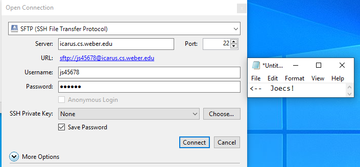
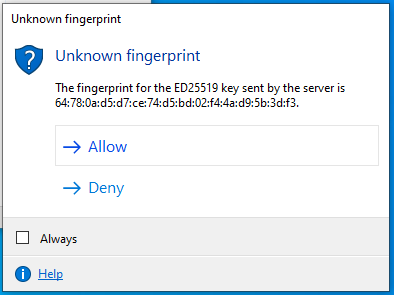
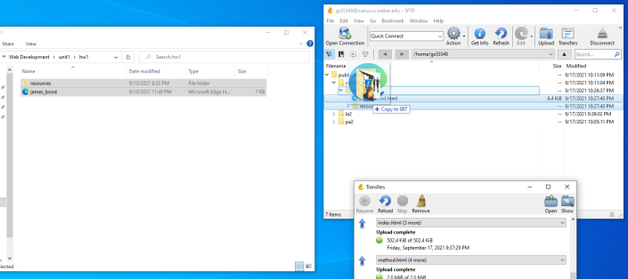

How to Publish on Icarus Web Server
Uploading Files to Icarus
Before we get started with how to upload something to the Icarus server, you first will need to download Remmina, which will be the program we use to connect to Icarus as well as to upload files to it. You can get to the download page for Remmina here. Ok, now that you have Remmina downloaded, install it and we can start connecting to Icarus.
- Click where it says "Open Connection" in the top-left corner; this will open the window shown in the image below.
- Change the drop-down menu at the top to SFTP.
- For the server, enter: icarus.cs.weber.edu
- Set port to: 22
- Set username to: first initial, last initial, and last 5 digits of your W number.
- Enter your password as your first name followed by "cs!"
- Then hit "Connect"
- After you try to connect to the Icarus server, you may get the pop-up message shown below. If you get this message, just choose "Allow".
- Now you are free to upload your files and folders to Icarus where it can be publicly accessed. This is very easy to do with Cyberduck, all you simply need to do is select whichever files and/or folders you wish to upload and then just click and drag them to wherever inside of the "public_html" folder you wish to put them. This is shown in the image below.



Congratulations! You have now successfully connected and uploaded files to the Icarus server. Next, we will look at how to know what the URL would be for navigating to whatever you uploaded from any device connected to the internet.
Making a URL for a File on Icarus
To build the URL for a file on Icarus, follow this pattern, the words that are in all caps are to be replaced by you: "https://HOSTNAME/~USERNAME/PATH/FILENAME". For this example, we will be using icarus.cs.weber.edu as the hostname and gs35549 for the username. The path is the path through whichever folders you need to go through starting from inside of the folder public_html. One important thing to remember though is if you are making a URL to an index.html page, then you do not need to add the filename to the URL and you can end the URL with the folder name; it will automatically open index.html if it finds one in the folder. Below are some examples of this.